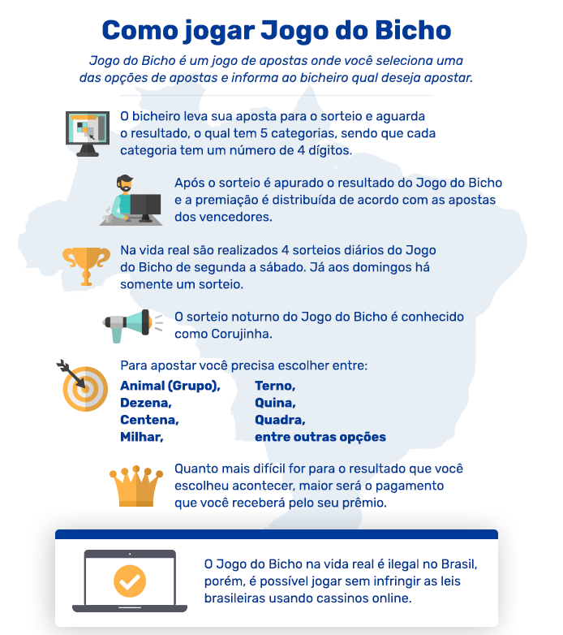

Nossa história
O jogo do bicho foi criado em 1892, no Rio de Janeiro, pelo Barão João Batista Viana Drummond como uma atração para os visitantes de seu Jardim Zoológico. Localizado em Vila Isabel e inaugurado em 1888, este se encontrava em dificuldades financeiras, após perder o subsídio imperial. Ao adquirir o ticket do ingresso, o visitante ganhava uma figurinha de um bicho. No alto de um poste, à entrada do zoológico, escondia-se a gravura de um dos 25 bichos da lista sob uma caixa de madeira, a ser revelado ao fim do dia. Quem estivesse com a figura do mesmo animal ganhava um prêmio de 20 vezes o valor da entrada.
Como jogar
Mais informações
Neste link você poderá aprender mais sobre como funcionam os tipos de aposta, as recompensas e até exemplos reais.
MAIS INFORMAÇÕES.